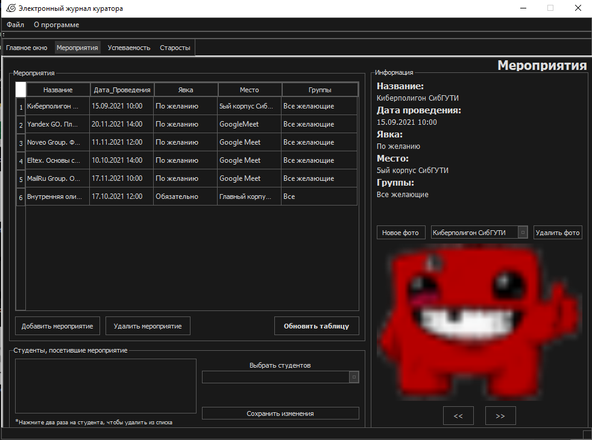
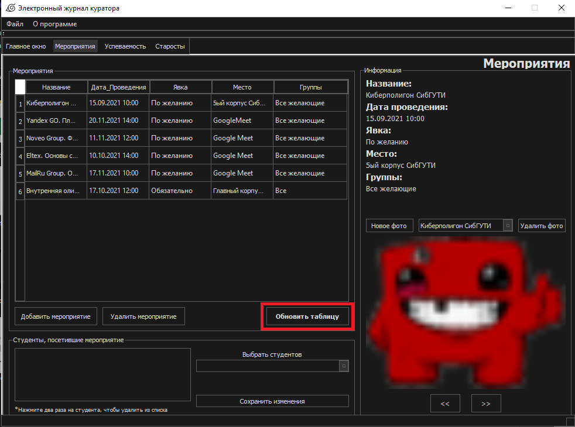
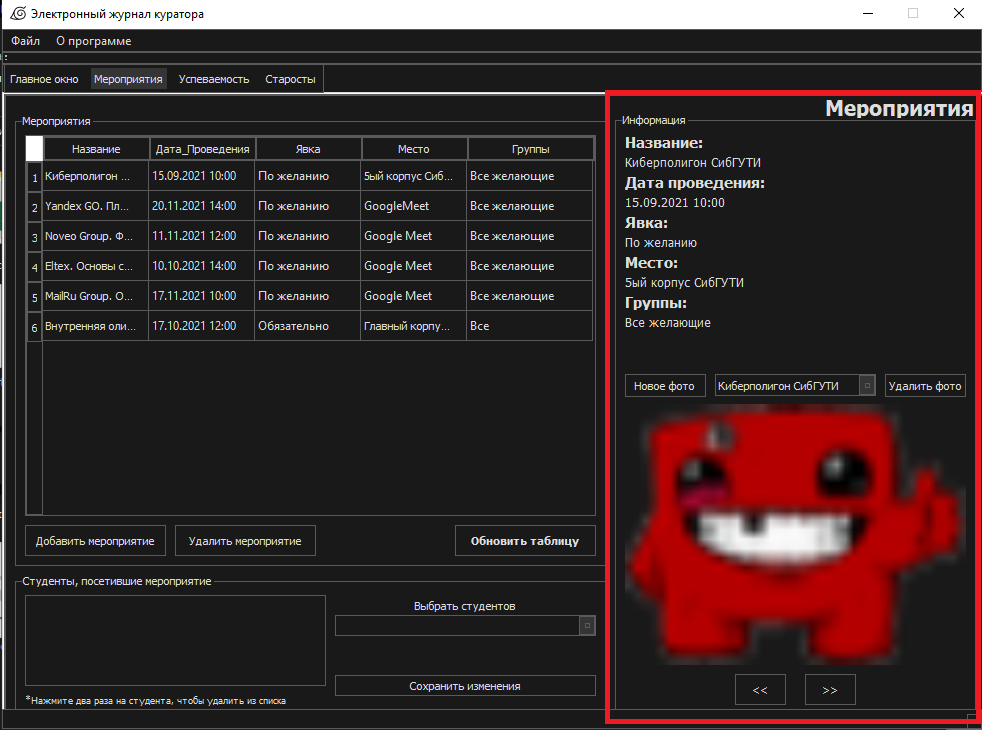

Мероприятия

1. Добавить мероприятие
Открывается новая форма, в которой
нужно будет заполнить необходимые
поля и указать дату проведения мероприятия. При нажатии
кнопки “Создать” – мероприятие
добавится в таблицу посредством
запроса.
2. Удалить мероприятие
Необходимо будет
нажать в таблице на ту строку с мероприятием, которую хотите удалить.
Как только выбрали строку – нажатием на кнопку “Удалить мероприятие” и
мероприятие удалится из таблицы.
3. Обновить таблицу

Если были внесены какие-то изменения в таблицу
извне или, возможно, после добавления/удаления мероприятия его либо нет,
либо оно удалилось и всё ещё есть в таблице, то достаточно нажать эту
кнопку. Она обновит данные таблицы и все связанные с нею данные. Соответственно,
возникшие проблемы исчезнут.
4. Удаление студента
Двойным нажатием на студента происходит удаление. Но прежде придется подтвердить удаление.
5. Поле "Информация"

Содержит в себе более наглядное представление о мероприятии
(не в табличном виде). Как можно заметить, там есть фотографии.
Добавляются они при нажатии на кнопку “Новое фото”. Возникает
диалоговое окно, которое предлагает выбрать фотографии.